2023
- Tingwei Shen, Jiamiao Jin, Jia Song, Hira Naz, Zhichao Jin, Yonggui Robin Chi, Xingxing Wu*. Design,
enantioselective synthesis, and antiviral activities against potato virus Y of axially chiral thiazine
derivatives.
J. Heterocycl. Chem.
2023,
DOI:10.1002/jhet.4776.
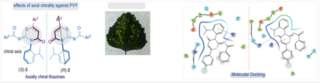
- Kun Tang, Fen Su, Shijie Pan, Fengfei Lu, Zhongfu Luo, Fengrui Che, Xingxing Wu*, Yonggui Robin Chi*. Chin. Chem. Lett. 2023, Accepted.
- Hongyan Long, Sha Zhao, Chunyan Jian, Xiuli Wu, Fengfei Lu, Minghong Liao, Fengrui Che,
Xingxing
Wu, and
Yonggui Robin Chi. Carbene-catalyzed Enantioselective Seleno-Michael Addition as Access to Antimicrobial
Active Se-containing Heterocycles. Sci. China Chem. 2023, DOI: 10.1007/s11426-023-1909-5.
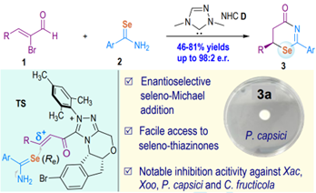
- Guanjie Wang, Chang Chin Ho, Zhixu Zhou, Yong-Jia Hao, Jie Lv, Jiamiao Jin, Zhichao Jin, and Yonggui
Robin Chi. Site-Selective C−O Bond Editing of Unprotected Saccharides. J. Am. Chem. Soc.
2023, DOI: 10.1021/jacs.3c10963.
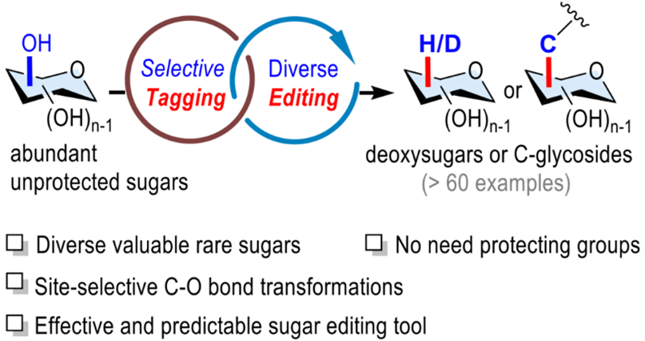
- Chengli Mou, Ya Lv, Jiamiao Jin, Huifang Chai, Tingting Li, Yonggui Robin Chi, and Zhichao Jin.
NHC-Catalyzed Reaction of Carboxylic Acids Using Allene Ketones as Substrates and Activating Reagents.
Org. Lett.
2023,
25,
8706-8710.
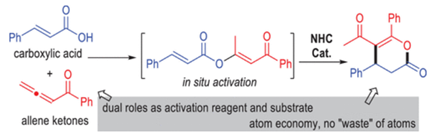
- Jiamiao Jin, Shi-Chao Ren, Yonggui Robin Chi. Chiral boryl radical catalyzed asymmetric radical cycloisomerization. Sci. China Chem. 2023, DOI: 10.1007/s11426-023-1900-2.
- Shichun Jiang, Wei Wang, Chengli Mou, Juan Zou, Zhichao Jin, Gefei Hao, Yonggui Robin Chi. Facile
access to benzofuran derivatives through radical reactions with heteroatom-centered
super-electron-donors.
Nature Commun.
2023,
14,
7381.
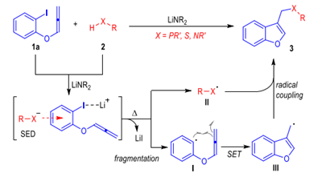
- Yuanlin Cai, Ya Lv, Liangzhen Shu, Zhichao Jin, Yonggui Robin Chi, and Tingting Li*. Access to Axially
Chiral Aryl Aldehydes via Carbene-Catalyzed Nitrile Formation and Desymmetrization Reaction.
Research
2023,
6,
0293.
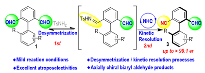
- Bivas Mondal, Hang Chen, Rakesh Maiti, Hongling Wang, Hui Cai, Chengli Mou, Lin Hao, Huifang Chai, and
Yonggui Robin Chi. Carbene-Catalyzed Direct O-Functionalization of Ketone: Atroposelective Access to
Non-C2-Symmetric Binaphthyls.
Org. Lett.
2023,
25,
8252–8257.
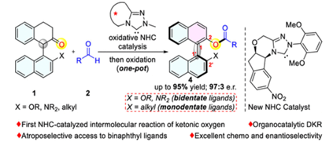
- Meng Zhang, Hui Cai, Dan Ling, Chen Pang, Jinming Chang, Zhichao Jin, Yonggui Robin Chi. Herbicidal
Activity of Beflubutamid Analogues as PDS Inhibitors and SAR Analysis and Degradation Dynamics in Wheat.
J. Agric. Food Chem.
2023,
71,
16972–16983.
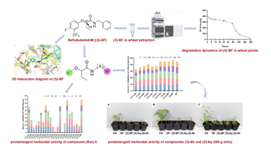
- Runjiang Song, Shichao Ren, Yonggui Robin Chi. Carbene- and photocatalysis redefine arene acylation.
Nature synth.
2023,
2,
1009-1011.
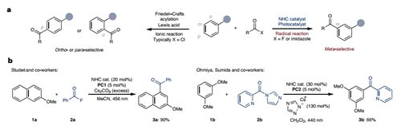
- Fen Su, Fengfei Lu, Kun Tang, Xiaokang Lv, Zhongfu Luo, Fengrui Che, Hongyan Long, Xingxing Wu, Yonggui
Robin Chi. Organocatalytic C-H Functionalization of Simple Alkanes.
Angew. Chem. Int. Ed.
2023,
e202310072.
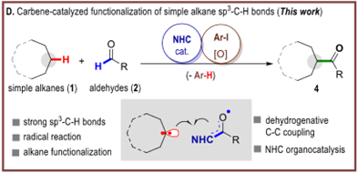
- Qian Liu*, Kunpeng Teng. Facile Approach for the Oxidative Enolate Activation of Aliphatic Aldehydes.
J. Org. Chem.
2023,
88,
2404−2414.
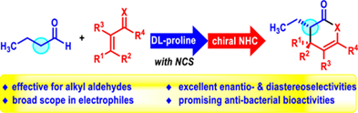
- Yingling Nong*, Chen Pang, Kunpeng Teng, Sheng Zhang, Qian Liu*. NHC-Catalyzed Chemoselective Reactions
of Enals and Cyclopropylcarbaldehydes for Access to Chiral Dihydropyranone Derivatives.
J. Org. Chem.
2023,
88,
13535−13543.
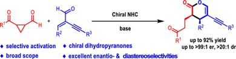
- Jinli Chen, Xiaoqun Yang, Yixian Huang, Zhiguo Zheng, Tingting Li*. The Development of Aldehyde Catalytic System. Chem. Asian J. 2023, 18, e202300731.
- Li-wei Liu, Zheng-hao Ding, Ganggang Ren, Guang-di Wang, Xin Pan, Guo-hai Wei, Xiang Zhou, Zhi-bing Wu,
Zhi-chao Jin, Yonggui Robin Chi, Song Yang. Inorganic Nanoparticles–Driven Self–Assembly of natural
small molecules in water for constructing multifunctional nanocapsules against plant diseases.
Chem. Eng. J.
2023,
475,
146041.
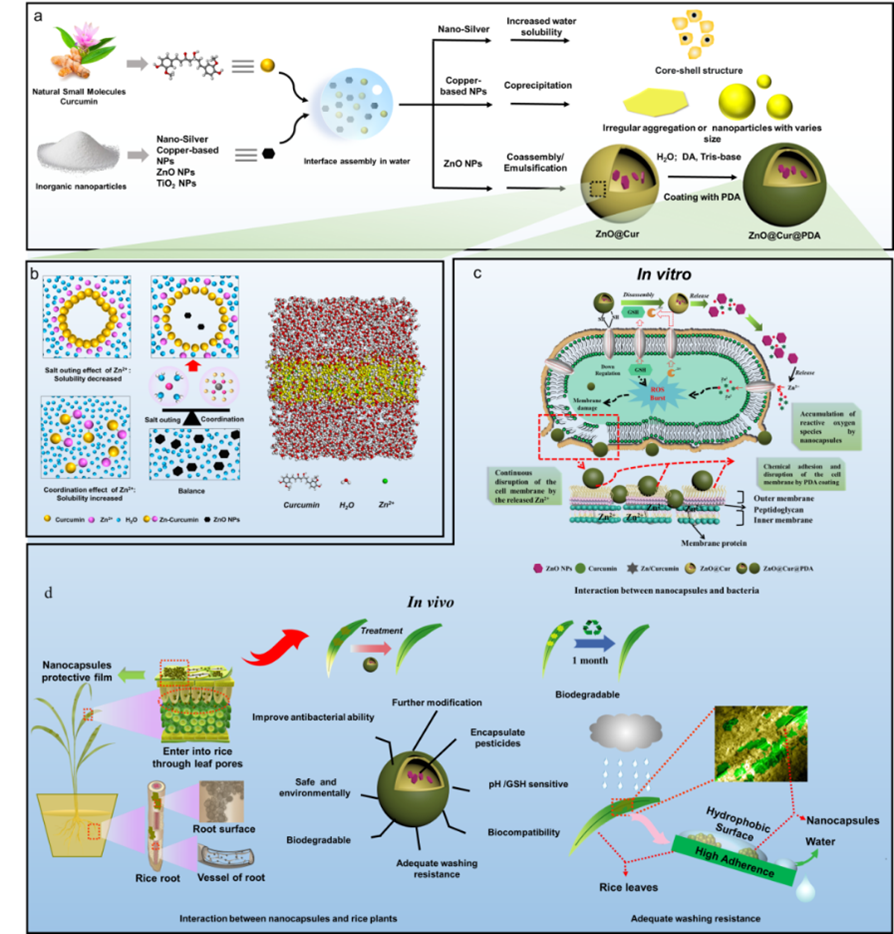
- Hongling Wang, Fen Su, Yanyan Wang, Xingxing Wu, Yonggui Robin Chi. Direct coupling of inert C–H bonds
in NHC organocatalysis.
Org. Chem. Front.
2023,
10,
5291-5295.
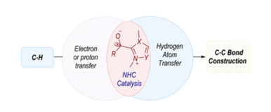
- Guihua Nie, Tingting Li*. NHC-Catalyzed Cascade Reactions for the Construction of Fused Cycles via LUMO
Activation of α,β-Unsaturated Carbonyls.
Asian J. Org. Chem.
2023,
12,
e202200680.
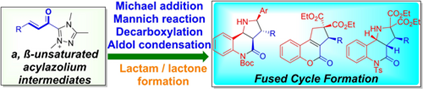
- Qingyun Wang, Shuquan Wu, Juan Zou, Xuyang Liang, Chengli Mou, Pengcheng Zheng, Yonggui Robin Chi.
NHC-catalyzed enantioselective access to β-cyano carboxylic esters via in situ substrate alternation and
release.
Nature Commun.
2023,
14,
4878.
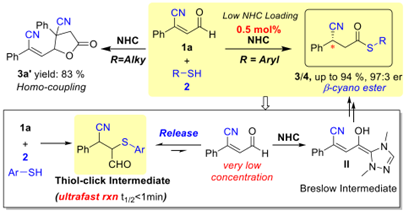
- Jia Song, Jie Lv, Jiamiao Jin, Zhichao Jin, Tingting Li*, Jian Wu*. Research Advances on the Bioactivity of 1,2,3-Triazolium Salts. Int. J. Mol. Sci. 2023, 24, 10694.
- Guodong Fan, Qingyun Wang, Jun Xu, Pengcheng Zheng, Yonggui Robin Chi. Carbene-catalyzed chemoselective
reaction of unsymmetric enedials for access to Furo[2,3-b]pyrroles.
Nature Commun.
2023,
14,
4243.
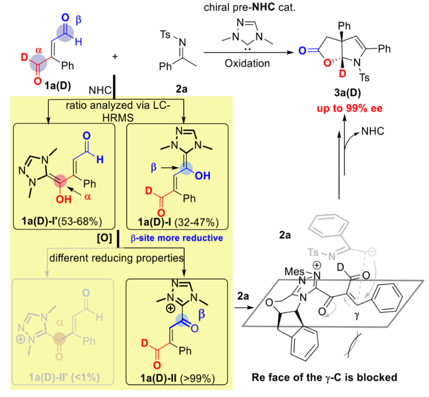
- Fen Su, Juan Zou, Xiaokang Lv, Fengfei Lu, Yijie Long, Kun Tang, Benpeng Li, Huifang Chai, Xingxing Wu,
Yonggui Robin Chi. Carbene-Catalyzed Intermolecular Dehydrogenative Coupling of Aldehydes with C(sp3)-H
Bonds.
Angew. Chem. Int. Ed.
2023,
e202303388.
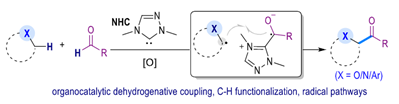
- Jiamiao Jin, Tingwei Shen, Liangzhen Shu, Yixian Huang, Youlin Deng, Benpeng Li, Zhichao Jin,*
Xiangyang Li,* and Jian Wu*. Recent Achievements in Antiviral Agent Development for Plant Protection.
J. Agric. Food Chem.
2023,
71,
1291–1309.
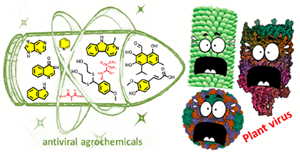
- Yi Zhang, Guihua Nie, Zhichao Jin*, Shichao Ren*. Photoredox Defluorinative Silylation of
α-Trifluoromethyl Arylalkenes Using Silacarboxylic Acids as Silyl Radical Precursors.
Synlett
2023,
DOI: 10.1055/a-2122-8406.
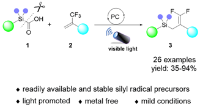
- Kunpeng Teng, Qian Liu, Jie Lv, Tingting Li*. The application of nitroarenes in catalyst-free photo-driven reactions. ChemPhotoChem 2023, e202300236.
- Yanyan Wang, Yonggui Liu, Sha Zhao, Yijie Long, Xingxing Wu*. Catalyst-controlled stereoselective
carbon–heteroatom bond formations by N-heterocyclic carbene (NHC) organocatalysis.
Org. Chem. Front.
2023,
10,
4437-4458.
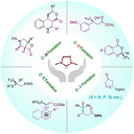
- Yi Zhang, Hui Cai, Xiuhai Gan*, Zhichao Jin*. N-Heterocyclic carbene-catalyzed enantioselective
(dynamic) kinetic resolutions and desymmetrizations.
Sci. China Chem.
2023,
DOI: 10.1007/s11426-022-1657-0.
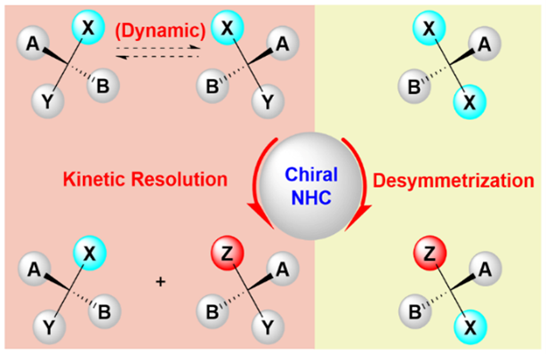
- Xiaoqun Yang, Yi Zhang, Tingting Li*, Zhichao Jin*. N-Heterocyclic Carbene-Catalyzed Activation of
3-Membered Rings: Cyclopropanes, Epoxides, Azirines and Aziridines.
Adv. Synth. Catal.
2023,
365,
1756.
- Jie Lv, Juan Zou, Yingling Nong, Jia Song, Tingwei Shen, Hui Cai, Chengli Mou, Wenxin Lyu, Zhichao Jin,
and Yonggui Robin Chi. Catalytic Regioselective Acylation of Unprotected Nucleosides for Quick Access to
COVID and Other Nucleoside Prodrugs.
ACS Catal.
2023,
13,
9567−9576.
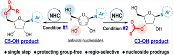
- Wei Zhang, Shengxin Guo, Lijiao Yu, Ya Wang, Yonggui Robin Chi, Jian Wu. Piperazine: Its role in the
discovery of pesticides.
Chin. Chem. Lett.
2023,
34,
108123.
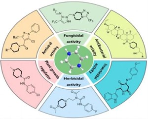
- Chaoyang Song, Tingwei Shen, Lingzhu Chen* and Tingting Li*. Facile access to 1-aryl-2,3-naphthalimides
via consecutive amidation/dehydro-Diels–Alder reactions.
Org. Chem. Front.
2023,
10,
3792-3798.
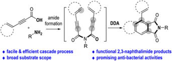
- Hui Cai, Xiuhai Gan, Zhichao Jin,* and Gefei Hao*. Carboxylic Acid Derivatives in Herbicide
Development.
J. Agric. Food Chem.
2023,
71,
9973–9993.
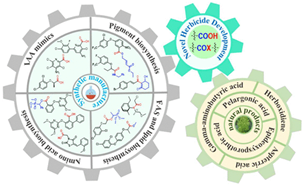
- Cuiyun Sun, Yingling Nong, Chen Pang, Sheng Zhang, Tingting Li*. Carbene-Catalyzed Regioselective
Addition of Oxindoles to Ynals for Quick Access to Allenes.
Synlett
2023,
34,
1997-2000.
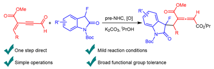
- Qifei Wu, Shuquan Wu, Juan Zou, Qingyun Wang, Chengli Mou, Pengcheng Zheng, and Yonggui Robin Chi.
Carbene-Catalyzed Access to Thiochromene Derivatives: Control of Reaction Pathways via Slow Release of
Thiols from Disulfides.
Org. Lett.
2023,
25,
3967–3971.

- Jia Song, Juan Zou, Jiamiao Jin, Jie Lv, Chengli Mou, Yonggui Robin Chi. Bioactivities of
Triazolium-Based N-Heterocyclic Carbene Salts.
Chem. Eur. J.
2023,
e202203661.
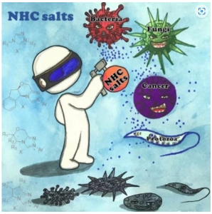
- Hong Ji, Chengli Mou, Juan Zou, Yonggui Liu, Shi-Chao Ren, Yonggui Robin Chi. NHC-catalyzed [12 + 2]
reaction of polycyclic arylaldehydes for access to indole derivatives.
Chem. Commun.
2023,
59,
6351-6354.
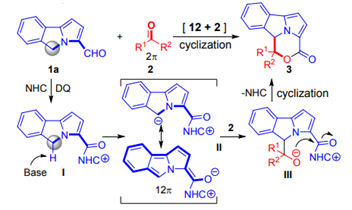
- Luoqiang Zhang, Dao-Yong Zhu, Jingyao Hu, Minjun Feng, Tze Chien Sum, Haoran Sun, Hajime Hirao, Yonggui
Robin Chi, and Jianrong Steve Zhou. Pursuing high efficiency in photocatalytic oxidative couplings of
heteroarenes and aliphatic C–H bonds.
Org. Chem. Front.
2023,
10,
1651-1659.
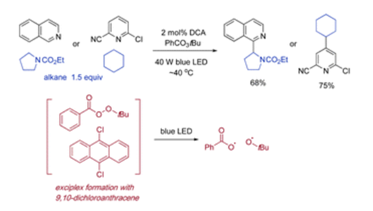
- Jiamiao Jin, Chengli Mou, Juan Zou, Xin Xie, Chen Wang, Tingwei Shen, Youlin Deng, Benpeng Li, Zhichao
Jin, Xiangyang Li and Yonggui Robin Chi. Development of axially chiral urazole scaffolds for antiplant
virus applications against potato virus Y.
Pest Manag. Sci.
2023,
79,
2527-2538.
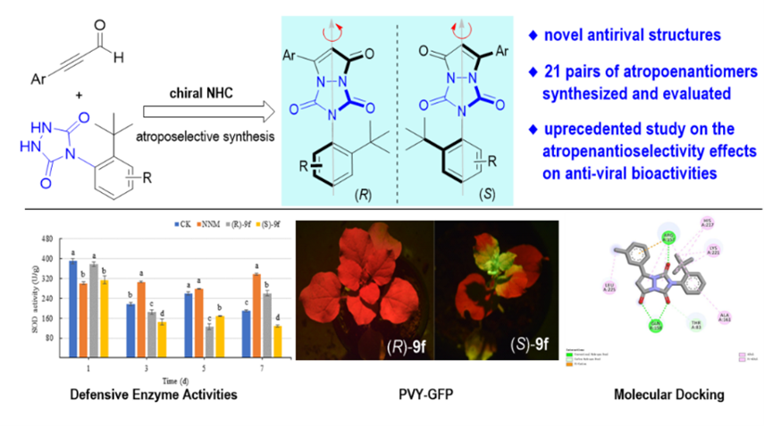
- Xuling Pan, Wei Wang, Xiuhui Gao, Gefei Hao, Tingting Li*. Photo-Induced In Situ Generation of Brønsted
Acid for Catalytic Friedel–Crafts Alkylation of Indoles.
Chem. Eur. J.
2023,
29,
e202203876.
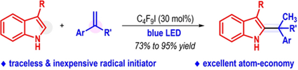
- Guihua Nie, Jun Sun, Chengli Mou, Kun Tang, Yonggui Robin Chi, and Tingting Li. Enantioselective
Synthesis of Pyrazolo[3,4-b]pyridone Derivatives with Antifungal Activities againstPhytophthora
capsici
and Colletotrichum fructicola.
Org. Lett.
2023,
25,
134–139.
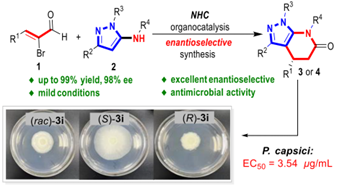
- Ya Wang, Shengxin Guo, Lijiao Yu, Wei Zhang, Zhenchao Wang, Yonggui Robin Chi, Jian Wu. Hydrazone
derivatives in agrochemical discovery and development.
Chin. Chem. Lett.
2023,
35,
108207.
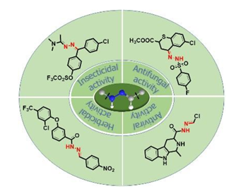
- Jie Lv, Yingling Nong, Kai Chen, Qingyun Wang, Jiamiao Jin, Tingting Li, Zhichao Jin, Yonggui Robin
Chi. N-Heterocyclic carbene catalyzed C-acylation reaction for access to linear aminoenones.
Chin. Chem. Lett.
2023,
34,
107570.
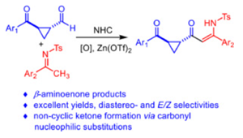